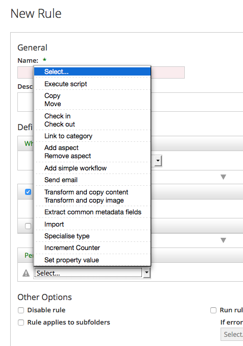
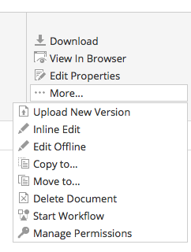
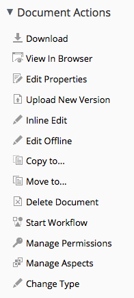
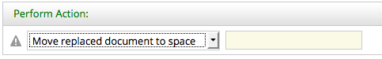
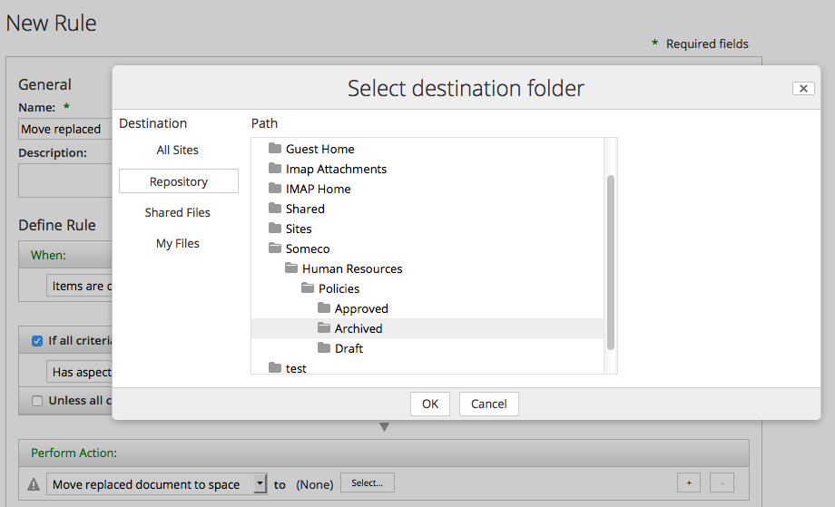
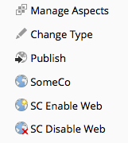
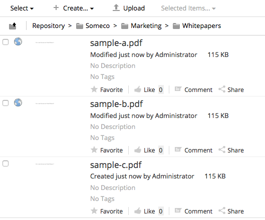
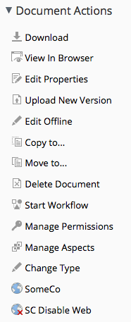
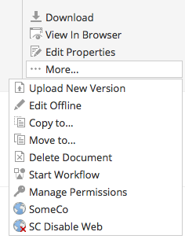

Creating Custom Actions in Alfresco¶
Jeff Potts, Metaversant Group — July, 2021
License¶

This work is licensed under the Creative Commons Attribution-ShareAlike 3.0 Unported License. To view a copy of this license, visit http://creativecommons.org/licenses/by-sa/3.0/ or send a letter to Creative Commons, 444 Castro Street, Suite 900, Mountain View, California, 94041, USA.
Introduction¶
Alfresco is a flexible platform for developing content management applications. Clients have several options to consider when selecting a user interface approach. Alfresco comes with a web client, Alfresco Share, that can be used as-is or customized. Alternatively, developers can create custom applications using the Content Management Interoperability Services (CMIS) API, web scripts, or the Alfresco Application Development Framework (ADF).
Many times, the out-of-the-box web client is sufficient, even if it has to be customized slightly to fit your requirements. This is particularly true when your requirements closely resemble the all-purpose document management use case.
Deciding whether to go with the out-of-the-box web client, a customized web client, or building your own user interface from scratch requires careful thought and analysis that is beyond the scope of this document.
This tutorial is part of a series of tutorials that cover Alfresco from a configuration and customization perspective. The previous tutorial discussed how to create custom content types and then expose those to the Alfresco Share user interface. The focus in this tutorial is on developing custom actions and configuring the user interface to show those custom actions.
It is important to note that if you are looking for quick-and-dirty ways to operate against documents in the repository, you may not need a custom action. For example, you could:
- Write some Java, Groovy, Python, PHP, or .NET code that leverages an Apache Chemistry library to work with content stored in Alfresco
- Create some server-side JavaScript that gets executed using the JavaScript Console add-on available from Share Extras
- Use curl or some other HTTP client to make calls against the Alfresco REST API
- Use curl or some other HTTP client to make calls against web scripts
None of the above require you to write actions.
Actions are useful when:
- You want to define one or more operations that can be executed repeatedly
- You want to make it easy for end-users to invoke common operations, either by clicking a menu item or by configuring a rule on a folder that will execute the operations automatically
- You want to perform one or more operations on a schedule (which isn't covered in this tutorial)
Part 1 of this document explains how to implement the “back-end” piece of the action. The document includes two different examples. One action, called “Move Replaced” will be used as a “Rule Action”. The other action is called “Set Web Flag” and it will be called from menu items in the user interface.
Part 2 explains how to configure the Alfresco Share user interface to work with the custom actions you developed in Part 1.
Setup¶
Before getting too far down the road, let me tell you about the tools you'll need and then give you a description of the project organization.
Tools¶
Here is what I am using on my machine:
- MacOS 11.4
- Java OpenJDK 11.0.2
- Apache Maven 3.8.5
- Alfresco Maven SDK 4.2 (No download necessary)
- Docker 20.10.6
- Docker Compose 1.29.1
By default, when you create an Alfresco project using the Alfresco Maven SDK the project will be configured to depend on the latest stable Alfresco Community Edition build.
An IDE is optional. Most people working with Alfresco use IntelliJ, Eclipse, or something similar.
Project Organization¶
I am going to use the Alfresco Maven SDK to create a project that will package up my customizations in two AMPs (Alfresco Module Packages). One AMP is for the Alfresco web application (the "repo" tier) and the other is for the Alfresco Share web application (the "Share" tier).
I am not going to spend much time talking about how the Alfresco Maven SDK works. If you aren't already familiar with it, you may want to read the Getting Started with the Alfresco Maven SDK tutorial on ecmarchitect.com first and then come back to this one.
This tutorial relies on code from the Custom Content Types
tutorial. The tutorial assumes that the repo tier AMP and Share tier AMP created
during that tutorial have been installed into your local Maven repository by
running mvn install from the root of the content-tutorial project.
If, rather than launching your project using the embedded Tomcat server, you are deploying to a separately installed Alfresco server, you must first deploy the content-tutorial repo tier and Share tier AMPs before deploying the AMPs you will create in this tutorial.
If you are planning on following along, go ahead and use the Alfresco Maven SDK
to create a new project from the "all-in-one" archetype. Use a groupId of
"com.someco" and an artifactId of "actions-tutorial".
I'm going to make three quick changes to the initial project files the SDK created:
- First, we always want to generate AMP files. Starting with SDK 3.0.0, the default is to generate only a JAR file. That's easily fixed by uncommenting the "maven-assembly-plugin" in the list of plugins in the pom.xml file.
-
Second, as I just mentioned, the actions tutorial project depends on the content tutorial project. When we launch the actions-tutorial project's Docker containers, we want the AMPs from the content tutorial to be installed, so those need to be set up as dependencies in the pom.xml of the platform docker module:
<dependencies> <dependency> <groupId>com.someco</groupId> <artifactId>actions-tutorial-platform</artifactId> <version>1.0-SNAPSHOT</version> <type>amp</type> </dependency> <dependency> <groupId>com.someco</groupId> <artifactId>content-tutorial-platform</artifactId> <version>1.0-SNAPSHOT</version> <type>amp</type> </dependency> </dependencies>And also in the pom.xml of the share docker module:
<dependencies> <dependency> <groupId>com.someco</groupId> <artifactId>actions-tutorial-share</artifactId> <version>1.0-SNAPSHOT</version> <type>amp</type> </dependency> <dependency> <groupId>com.someco</groupId> <artifactId>content-tutorial-share</artifactId> <version>1.0-SNAPSHOT</version> <type>amp</type> </dependency> </dependencies> -
Third, not only do we want the content tutorial AMPs installed, but the actions tutorial actually has a compile-time dependency on that project. So, go into the "actions-tutorial-platform" directory and add the dependency to the pom.xml:
<dependencies> <dependency> <groupId>com.someco</groupId> <artifactId>content-tutorial-platform</artifactId> <version>1.0-SNAPSHOT</version> <scope>provided</scope> </dependency> </dependencies>
Now we're ready to begin.
Part 1: Implementing an Action¶
Actions are very commonly used when implementing Alfresco. This part of the tutorial explains what actions are, sets up a couple of examples, then shows how actions are implemented in Java.
What is an Action?¶
The term, “action” is overloaded quite heavily across the Alfresco platform (and application development, in general). For the purposes of this document, an action is a discrete, reusable unit of work that can be performed against an object in the repository, and can optionally be configured at run-time by the user. Some of the out-of-the-box actions include things like: Check-out, Check-in, Add Aspect, Remove Aspect, Move, Send Email, and Specialize Type.
Sometimes, the term “rule action” is used to describe this type of action. That's because actions are frequently used when configuring a rule on a folder. For example, suppose that there is a requirement to always create a PNG version of GIFs checked in to a specific folder. This is easily done by creating a rule that watches for new or updated GIFs and then runs the “Transform and Copy Image” action when it finds an object that meets the criteria.
The screenshots below show some of the out-of-the-box actions available when configuring a rule in Alfresco Share:

But actions aren't limited to running as part of a rule. Actions can be called from menu items in the Alfresco Share user interface. These are often called “UI actions” to distinguish the actual menu item, the UI action, from the thing that actually does the work, the “rule action” or simply, the “action”.
These screenshots show the UI actions available in Alfresco Share's document library's document list as well as the document details page:


So actions can be invoked from a rule and can be triggered from a menu item. Actions can also be called from code which means they can be invoked from server-side JavaScript, workflows, web scripts, or any other piece of code that can get to the Action Service.
Because the same action can be invoked from all of these places, actions are a powerful way to write content operations once and then leverage them in many places.
Example 1: Move Replaced¶
Using actions and workflow together can be an effective way to customize the web client for the needs of the business. Consider SomeCo, the fictitious company introduced in the content types tutorial. Suppose SomeCo wants to use Alfresco to manage the policies and procedures for their entire organization. They need to be able to track when a new policy or procedure is published that supersedes an older policy document.
SomeCo uses three folders to keep track of the state of their policies: Draft, Approved, and Archived. SomeCo uses Alfresco's Simple Workflows to move policies from folder to folder. When someone moves a policy into the Approved folder, if that policy replaces an older policy, the older policy needs to be automatically moved to the Archived folder. Alfresco has a “Move” action, but doesn't have a “Move Replaced” action. A new “Move Replaced” action can easily be created to accomplish this.
You're going to see how to implement this momentarily.
Example 2: Set Web Flag¶
Recall from the first tutorial that SomeCo publishes a subset of the documents in their repository to a company portal. SomeCo uses a flag on the object to keep track of which documents should be shown on the portal. In the first tutorial, that flag was set either by editing the field in the user interface or by running code. Now it is time to make it a bit more user-friendly by providing menu items in the user interface that can enable and disable the flag.
The rest of this document explains how to implement both of these actions including the configuration necessary to make them available from the Alfresco Share user interface.
Implementing the Move Replaced Action¶
Actions run against specific nodes. In this example, the action needs to find the documents that the “actioned upon node” replaces so they can be moved. In order to do this, the action needs to know where to move the old documents to and it needs to know how to find the old documents. The first part, where to move the old documents, will be a parameter that gets passed to the action. The second part will leverage a “replaces” relationship.
A "replaces" relationship is a pretty common requirement. In fact, Alfresco already has a "replaceable" aspect in the out-of-the-box content model. The “replaceable” aspect defines an association called “cm:replaces”. So, the out-of-the-box content model already accommodates documents that replace other documents. All that is needed is some configuration to expose this relationship to the user interface.
The business logic will reside in an action executer class. This will allow SomeCo end-users to call the action from a rule configured on any folder, without further involvement from the development team.
Implementing the action's business logic involves two steps:
- Writing the action executer class
- Configuring the action in Spring
Once that's done, the action can be called from code using the Action Service, or it can be wired in to the user interface (including rule configuration), which is covered in Part 2.
Step 1: Write the action executer class¶
At its most basic, an action consists of an Action Executer class and
its associated Spring bean configuration. Implementing an action
involves extending ActionExecuterAbstractBase and then implementing the
executeImpl() method. Before starting, though, think about similar code
that might already exist within Alfresco that might be a good starting
point for the new action. Alfresco is open source--it would be a shame
to ignore that valuable resource. Plus, following the same patterns to
implement this customization will make it easier for someone to support
and makes it easier to share our code with others or even to contribute
the code back to the Alfresco community project.
The new action is doing a move, so the existing Move action is a good place to start. In fact, the only difference between the Move action and the custom Move Replaced action is that the node being moved isn't the current node--it's the node on the target end of a "replaces" association.
Alfresco's executer class for the Move action is called
org.alfresco.repo.action.executer.MoveActionExecuter. If you have the
Alfresco source you can find it in the repository project. I'll copy it
into my own repository project and call it "MoveReplacedActionExecuter".
The out-of-the-box executeImpl() method is where the move logic is handled.
It looks like this:
public void executeImpl(Action ruleAction, NodeRef actionedUponNodeRef)
{
NodeRef destinationParent = (NodeRef)ruleAction.getParameterValue(PARAM_DESTINATION_FOLDER);
try
{
fileFolderService.move(actionedUponNodeRef, destinationParent, null);
}
catch (FileNotFoundException e)
{
// Do nothing
}
}
The code simply grabs the parameter value for the destination folder and
then calls the FileFolderService to do the move. This is a good start
for Move Replaced. All I need to do is modify the executeImpl() method to
find the nodes related to the current node by a "replaces" association,
and then for each result, set up and perform a move.
public void executeImpl(Action ruleAction, NodeRef actionedUponNodeRef) {
// get the replaces associations for this node
List<AssociationRef> assocRefs = nodeService.getTargetAssocs(actionedUponNodeRef, ((QNamePattern) QName.createQName(NamespaceService.CONTENT_MODEL_1_0_URI, "replaces")) );
// if there are none, return
if (assocRefs.isEmpty()) {
// no work to do, return
return;
} else {
NodeRef destinationParent = (NodeRef)ruleAction.getParameterValue(PARAM_DESTINATION_FOLDER);
for (AssociationRef assocNode : assocRefs) {
// create a noderef for the replaces association
NodeRef targetNodeRef = assocNode.getTargetRef();
// if the node exists
if (this.nodeService.exists(targetNodeRef) == true) {
try {
fileFolderService.move(targetNodeRef, destinationParent, null);
} catch (FileNotFoundException e) {
// Do nothing
}
}
} // next assocNode
} // end if isEmpty
}
The only other change needed is to change the value of the constant NAME from "move" to "move-replaced". (Throughout this document I'll only include relevant pieces of these classes—check the source that accompanies this tutorial for code that actually compiles).
Step 2: Configure the action in Spring¶
In the content types tutorial, you learned that Spring bean configurations go in the context file for the AMP. That file is called "service-context.xml" and it resides in:
$TUTORIAL_HOME/actions-tutorial-platform/src/main/resources/alfresco/module/actions-tutorial-platform/context
The file is created for you by the Alfresco Maven SDK. Initially, it contains
some bean elements for some demo classes that are also created by the Alfresco
Maven SDK. It is safe to delete the demo beans. If you deleted the demo Java
code that the SDK created, you must also delete the demo beans.
Add the following bean element to the existing beans element:
<bean id="move-replaced" class="com.someco.action.executer.MoveReplacedActionExecuter" parent="action-executer">
<property name="fileFolderService">
<ref bean="FileFolderService" />
</property>
<property name="nodeService">
<ref bean="NodeService" />
</property>
</bean>
That's all there is to it. You can now invoke either of these two actions with the Action Service.
Testing the Action¶
In the source code that accompanies this tutorial, I've included some
integration tests. The integration tests just attempt to use the ActionService
to get the action. For the Move Replaced action, I also execute the action.
If you are following along, you can copy the MoveReplacedActionIT class into:
$TUTORIAL_HOME/actions-tutorial-platform/src/test/java/com/someco/action/test
Once you do that (or if you have simply checked out the tutorial source from
GitHub) you can then run ./run.sh build_start_it_supported to start up the
Alfresco Docker containers with your extensions installed. Once everything is
up, run ./run.sh test to compile and run the integration tests.
So at this point, you've got one new custom action, but it isn't configured in the Alfresco Share user interface. Before doing that, let's look at another Action Executer example, then we'll configure them both in the UI.
Implementing the Set Web Flag action¶
This action will be used to set the flag on content which should be shown in the
SomeCo portal. Recall from the content types tutorial that the property that
controls whether or not content should show up in the portal is a boolean named
sc:isActive which is defined as part of an aspect named sc:webable. Also in
that aspect is a date property named sc:published that keeps track of when the
content was last published to the portal.
The Set Web Flag action, then, needs to set the sc:isActive flag. The value to
set it to (true or false) can be passed in as a parameter to the action.
When the flag is set to true, the action should set the sc:published
property with the current date.
This action could be called from a rule, but SomeCo intends to configure a UI action in the user interface to allow end-users the ability to enable or disable a piece of content for display on the portal with a single click.
Just like in the Move Replaced example, the steps are:
- Write the action executer class
- Configure the action in Spring
Then, the action will be ready to use.
Step 1: Write the SetWebFlag action executer class¶
Like the MoveReplacedAction, this action class extends
ActionExecuterAbstractBase. The action takes a parameter that specifies
the value for the sc:isActive flag. Actions declare parameters by
overriding the addParameterDefinitions() method, like this:
@Override
protected void addParameterDefinitions(List<ParameterDefinition> paramList) {
paramList.add(
new ParameterDefinitionImpl(
PARAM_ACTIVE,
DataTypeDefinition.BOOLEAN,
false,
getParamDisplayLabel(PARAM_ACTIVE)));
}
The constructor for the ParameterDefinitionImpl takes the name of the
parameter, the parameter's data type, whether or not the parameter is
mandatory, and a label. If the custom action had additional parameters
this method would have one paramList.add() call for each parameter.
The next step is to create the action's logic in the executeImpl() method:
@Override
protected void executeImpl(Action action, NodeRef actionedUponNodeRef) {
Boolean activeFlag = (Boolean)action.getParameterValue(PARAM_ACTIVE);
if (activeFlag == null) activeFlag = true; // default
// set the sc:isActive property to true
Map<QName, Serializable> properties = nodeService.getProperties(actionedUponNodeRef);
properties.put(
QName.createQName(SomeCoModel.NAMESPACE_SOMECO_CONTENT_MODEL, SomeCoModel.PROP_IS_ACTIVE), activeFlag);
if (activeFlag) {
// set the sc:published property to now
properties.put(
QName.createQName(SomeCoModel.NAMESPACE_SOMECO_CONTENT_MODEL, SomeCoModel.PROP_PUBLISHED), new Date());
}
// if the aspect has already been added, set the properties
if (nodeService.hasAspect(actionedUponNodeRef,
QName.createQName(
SomeCoModel.NAMESPACE_SOMECO_CONTENT_MODEL,
SomeCoModel.ASPECT_SC_WEBABLE))) {
nodeService.setProperties(actionedUponNodeRef, properties);
} else {
// otherwise, add the aspect and set the properties
nodeService.addAspect(actionedUponNodeRef,
Qname.createQName(
SomeCoModel.NAMESPACE_SOMECO_CONTENT_MODEL,
SomeCoModel.ASPECT_SC_WEBABLE), properties);
}
}
The logic should be pretty easy to follow. The code grabs the value of
the active parameter. Then, it sets up a Map to hold properties. If the
active flag is being set to true, the date property is added to the Map.
The last part of the method just checks to see whether the aspect needs
to be added or not. If so, the aspect can be added and the properties
set in a single call.
Step 2: Configure the action in Spring¶
The Spring configuration for this action goes in the same context file as the pervious action (service-context.xml):
<bean id="set-web-flag" class="com.someco.action.executer.SetWebFlag" parent="action-executer">
<property name="nodeService">
<ref bean="NodeService" />
</property>
</bean>
The action can now be invoked by the Action Service. If you want, you can test
it by starting up the Docker containers and then running ./run.sh test just
like you did for the Move Replaced action.
Localizing the actions¶
This step isn't strictly necessary at this point, but it will save a step later. There are some places in the Alfresco Share user interface that get localized values from the repository tier. So a user-friendly title and description for each of these actions needs to be set.
Following the same pattern as the content tutorial, I created a "messages" folder in:
$TUTORIAL_HOME/actions-tutorial-platform/src/main/resources/alfresco/module/actions-tutorial-platform
It is okay to delete the demo properties file that the SDK may have put in the messages folder.
In that folder I created a file called "somecoactions.properties" with the following content:
# Move Replaced action
move-replaced.title=Move replaced document to space
move-replaced.description=This will move the target node of a replaces association to a specified space.
# Set web flag action
set-web-flag.title=Sets the SC Web Flag
set-web-flag.description=This will add the sc:webable aspect and set the isActive flag.
Spring needs to know about this properties bundle, so I replaced the demo Spring beans in bootstrap-context.xml with this bean:
<bean id="${project.artifactId}_actionResourceBundles" parent="actionResourceBundles">
<property name="resourceBundles">
<list>
<value>alfresco.module.${project.artifactId}.messages.somecoactions</value>
</list>
</property>
</bean>
Now when Alfresco Share asks for the title or description of these actions, it will get the appropriate values.
Both of these actions are now ready to be wired in to the user interface. That's covered in Part 2.
Part 2: Configuring the Action's Front-End in Share¶
In Part 1 of this document you learned how to create an Action Executer class. The result was an action that could be called from code. But both actions need to be invoked by end-users. In the case of the Move Replaced action, an end-user will configure a rule that will invoke the action. When the end-user configures the action while setting up the rule, they need to specify the directory to send the replaced documents to. That means the user interface needs to know how to let the end user pick a target folder.
The Set Web Flag action gives end-users the ability to set the active flag and
the publish date with a single click of a menu item. So the user interface needs
to know where to show that menu item and how to invoke the set-web-flag action
in the repository.
Configuring the Replaceable Aspect in Share¶
Alfresco's out-of-the-box content model already defines an association called
cm:replaces as part of the cm:replaceable aspect. But neither the aspect nor
the association are configured to be displayed in the Share user interface.
That's easy to fix. All you have to do is edit share-config-custom.xml and then
localize the labels.
Step 1: Edit share-config-custom.xml¶
Recall from the content types tutorial that the Share user interface configuration resides in a file called “share-config-custom.xml”. The actions-tutorial-share project will have its own share-config-custom.xml that contains Share configuration specific to the custom actions. The file resides under:
$TUTORIAL_HOME/actions-tutorial-share/src/main/resources/META-INF
You can replace the demo config elements the SDK populated in share-config-custom.xml as instructed in this section.
The cm:replaceable aspect can be added to the list of aspects a user can
see by adding some document library configuation to share-config-custom.xml,
like this:
<alfresco-config>
<!-- Document Library config section -->
<config evaluator="string-compare" condition="DocumentLibrary">
<aspects>
<!-- Aspects that a user can see -->
<visible>
<aspect name="cm:replaceable" />
</visible>
<!-- Aspects that a user can add. Same as "visible" if left empty -->
<addable>
</addable>
<!-- Aspects that a user can remove. Same as "visible" if left empty -->
<removeable>
</removeable>
</aspects>
</config>
</alfresco-config>
Next, the cm:replaces association needs to show up when editing properties.
In this example, SomeCo will use instances of cm:content for policies, but
this would work the same way if a specific content type, like sc:hrPolicy,
were used instead. So I've copied the form configuration for cm:content from
the out-of-the-box form configuration into share-config-custom.xml.
Just like in the content types tutorial, the association is configured by
adding children to the field-visibility and appearance elements, like this:
<show id="surf:mid"/>
<show id="surf:label"/>
<!-- cm:replaceable -->
<show id="cm:replaces" />
</field-visibility>
and this:
<field id="cm:sentdate" read-only="true" />
<field id="cm:subjectline" read-only="true" />
<field id="cm:replaces" label-id="assoc.cm_replaces"/>
</appearance>
Step 2: Localize the labels¶
The last step in exposing the cm:replaceable aspect and cm:replaces
association is localizing the labels. As you saw in the content types tutorial,
custom labels go in:
$TUTORIAL_HOME/actions-tutorial-share/src/main/resources/alfresco/web-extension/messages
The SDK probably created a demo properties file in that directory. Delete it.
I'll create a new file for this module called scActions.properties. In it goes the following:
#cm:replaceable
aspect.cm_replaceable=Replaceable
assoc.cm_replaces=Replaces
The custom properties file needs to be configured using Spring. So, again, just like the custom content types tutorial, I'll edit a context file called "actions-tutorial-slingshot-application-context.xml" in:
$TUTORIAL_HOME/actions-tutorial-share/src/main/resources/alfresco/web-extension
Replace the demo bean that the SDK created for you with this:
<!-- Add Someco messages -->
<bean id="${project.artifactId}_resources" class="org.springframework.extensions.surf.util.ResourceBundleBootstrapComponent">
<property name="resourceBundles">
<list>
<value>alfresco.web-extension.messages.scActions</value>
</list>
</property>
</bean>
Now the replaceable aspect can be added to and removed from documents using Alfresco Share. The next step is to configure the Move Replaced Rule Action in Share.
Configuring the Move Replaced Rule Action in Share¶
Share is pretty smart. If you deploy the Move Replaced action as-is it will automatically get added to the list of actions users can select when configuring a rule. So for simple actions, you won't have to do anything further. But in this example, the action takes an argument. By default, Share will try to render a plain text field for the argument, like this:

A plain text field for the parameter might work in some cases, but this action takes a node reference as an argument and making an end-user provide a node reference for the target folder would be a very bad thing. Instead, Share needs to render a folder picker dialog for the target folder argument. Luckily, Alfresco has already developed such a dialog—Share just has to be told to use it.
Unfortunately, at the moment, getting a folder picker to show up for this action takes a bit more work than it ought to. Here is what is involved:
- Override the rule config action web script to point to a custom client-side component and to set the order the action appears in the action list.
- Override the rule details and rule edit web script to include a “script” reference in the “head” section of the page that points to the client-side JavaScript where the custom client-side component lives.
- Write the custom client-side component.
It looks like a pain, but once you figure it out it isn't too bad. And it is a lot easier than it used to be if that makes you feel any better. Let's go through the steps.
Step 1: Specify the custom client-side component and set the action order¶
Rule config lives in the rule config web script. It is easy to override one or more files that make up a web script. In this case, copy the rule-config-action.get.config.xml file from:
$TOMCAT_HOME/webapps/share/WEB-INF/classes/alfresco/site-webscripts/org/alfresco/components/rules/config
into your own project. For example, in the code that accompanies this tutorial, I copied the file into:
$TUTORIAL_HOME/actions-tutorial-share/src/main/resources/alfresco/web-extension/site-webscripts/org/alfresco/components/rules/config
The first change is to specify a custom client-side JavaScript component:
<rule-config type="action">
<component>SomeCo.RuleConfigActionCustom</component>
<config-definitions webscript="/api/actiondefinitions">
This will be a new client-side JavaScript component that will get created shortly.
Next, the action gets arranged in the list of actions. In this case, it
makes sense to see it in the list right after “Move” so a new action element
gets added accordingly:
<menu>
<group>
<item id="select"/>
</group>
<group>
<action name="script"/>
</group>
<group>
<action name="copy"/>
<action name="move"/>
<action name="move-replaced"/>
</group>
Finally, the move-replaced action gets bound with a client-side JavaScript
function called MoveReplaced:
<action name="copy">Copy</action>
<action name="move">Move</action>
<action name="move-replaced">MoveReplaced</action>
<action name="simple-workflow">SimpleWorkflow</action>
With this configuration in place, the custom Move Replaced action will show up in the list of actions that can be performed as part of a rule.
Step 2: Add a reference to the custom client-side JavaScript file to the head¶
The move-replaced action is going to be invoking some client-side JavaScript.
So a reference to the file that contains the JavaScript needs to be added to the
page so it can be loaded by the browser. The preferred way to point to a
client-side resource is by adding it to the Freemarker view as a dependency. To
do that, the rule-details.get.html.ftl and rule-edit.get.html.ftl files are
copied from:
$TOMCAT_HOME/webapps/share/WEB-INF/classes/alfresco/site-webscripts/org/alfresco/components/rules
Into the tutorial project under:
$TUTORIAL_HOME/actions-tutorial-share/src/main/resources/alfresco/web-extension/site-webscripts/org/alfresco/components/rules
In both files, the new script element is added to the end of the JavaScript
dependencies, like this:
<@markup id="js">
<#-- JavaScript Dependencies -->
...SNIP...
<!--Custom javascript file include for detail mode -->
<@script type="text/javascript" src="${url.context}/res/components/someco/rules/config/rule-config-action-custom.js" group="rules_custom"></@script>
</@>
Okay, at this point, the rule form will be looking for a custom client-side
JavaScript component called SomeCo.RuleConfigActionCustom, the action will show
up in the right place, and the page's head element will include a reference to
the custom client-side JavaScript file where the component will reside. It's
time to implement the client-side JavaScript.
Step 3: Implement the custom client-side JavaScript component¶
The FreeMarker files have been modified to include a reference to a file called rule-config-action-custom.js. This file will contain client-side JavaScript. It goes in:
$TUTORIAL_HOME/actions-tutorial-share/src/main/resources/META-INF/resources/components/someco/rules/config
Alfresco has their rule-related client-side JavaScript under “components/rules/config” so I used the same folder structure, using "someco" to keep my stuff separate from Alfresco's.
The first thing the rule-config-action-custom.js file does is declare a SomeCo namespace. It is important that you namespace everything in Alfresco to avoid collisions with Alfresco's code or other add-ons you might install.
if (typeof SomeCo == "undefined" || !SomeCo)
{
var SomeCo = {};
}
Next, comes the constructor for the component (I've left out some boring stuff, check the source for the full listing):
SomeCo.RuleConfigActionCustom = function(htmlId)
{
SomeCo.RuleConfigActionCustom.superclass.constructor.call(this, htmlId);
// Re-register with our own name
this.name = "SomeCo.RuleConfigActionCustom";
Alfresco.util.ComponentManager.reregister(this);
// Instance variables
this.customisations = YAHOO.lang.merge(this.customisations, SomeCo.RuleConfigActionCustom.superclass.customisations);
this.renderers = YAHOO.lang.merge(this.renderers, SomeCo.RuleConfigActionCustom.superclass.renderers);
return this;
};
What's going on here is that the constructor is calling its superclass constructor, then it is registering itself with the Alfresco component manager. The YUI merge calls provide a way to avoid re-typing a bunch of code that exists in the parent class.
The final bit is where the extend actually happens, and the MoveReplaced
handler is defined:
YAHOO.extend(SomeCo.RuleConfigActionCustom, Alfresco.RuleConfigAction,
{
/**
* CUSTOMISATIONS
*/
customisations:
{
MoveReplaced:
{
text: function(configDef, ruleConfig, configEl)
{
// Display as path
this._getParamDef(configDef, "destination-folder")._type = "path";
return configDef;
},
edit: function(configDef, ruleConfig, configEl)
{
// Hide all parameters since we are using a cusotm ui but set default values
this._hideParameters(configDef.parameterDefinitions);
// Make parameter renderer create a "Destination" button that displays an destination folder browser
configDef.parameterDefinitions.splice(0,0,{
type: "arca:destination-dialog-button",
displayLabel: this.msg("label.to"),
_buttonLabel: this.msg("button.select-folder"),
_destinationParam: "destination-folder"
});
return configDef;
}
},
},
});
This part is a copy of the out-of-the-box handler for Move with the
object renamed to MoveReplaced. The MoveReplaced object has two methods:
text and edit. The text method returns what is displayed for the component
in read mode. Edit is for edit mode. The edit method is what is responsible
for generating the button that invokes the folder picker. In this case, edit
leverages an existing renderer called arca:destination-dialog-button that is
defined in the superclass. If you needed to produce markup for a parameter for
which Alfresco doesn't already have a renderer, you would add the appropriate
code to the renderers object.
With this final step in place, end-users can configure a rule that invokes the Move Replaced action. The rule editor will use the custom handler for the action so that a folder picker dialog is used to select the target folder.
You can see this happening in the screenshot below. You can see the dialog that gets launched when the Select button is clicked as well as the little folder icon and folder path that are rendered once a selection is made.

Testing Your Share Configuration¶
You can use the Alfresco Maven SDK to run the actions-tutorial project using Docker and Docker Compose. The Alfresco and Share WARs installed in the Tomcat servers in the Docker containers will have the content-tutorial AMPs installed because we added them to the Docker modules' pom.xml and, of course, will also have the actions-tutorial AMPs installed.
To start it up, open a terminal window, switch to the actions-tutorial project
root directory, and run ./run.sh build_start (if you are on Windows, use
run.bat instead).
That starts Alfresco in a container that is listening on port 8080 and Share in a container that is listening on port 8180.
Configuring the Set Web Flag UI Action in Share¶
Now it is time to shift focus from rule actions to UI actions. SomeCo wants end-users to be able to click an item in the menu that either enables or disables the web flag. Alfresco has a framework that allows you to easily add new UI actions to the menu. You can configure:
- UI actions that call a web page (external or within Share),
- UI actions that invoke rule actions on the repository tier that take no parameters,
- UI actions that invoke rule actions on the repository tier that launch a dialog to gather parameters before passing those parameters to an action on the repository tier,
- UI actions that call arbitrary client-side JavaScript action handlers.
Recall that the Set Web Flag action you wrote in Part 1 takes one parameter—the
value of the active flag. I could use the action framework out-of-the-box to
invoke a dialog that lets the user set the action flag to true or false and
then call the set web flag action. But that doesn't meet the single-click
requirement, and a form is overkill to grab one boolean value.
If you look in the list above, you'll see there isn't an option to hardcode arbitrary parameters in the action config when the action is called. So we're forced to either call a custom client-side JavaScript action handler or add new actions to the repository tier that don't take parameters. There's no “right” answer here—it's just a matter of where you want to write the code. At some point, Alfresco will probably enhance the framework to meet this use case. Until then, for this example, I'm going to go the “no parameter” route, which means I'll have to add two new actions on the repository tier that don't require parameters to be passed in.
So, the steps to follow for this example are:
- Create two new repository tier actions that take no parameters
- Update share-config-custom.xml with the action configuration
- Create icons and localize the strings
Step 1: Create two new repository tier actions¶
You created action executer classes in Part 1 of this tutorial so this
is nothing new. We're creating two new ones that don't take any parameters
because we want to easily take advantage of the logic Alfresco Share already has
for invoking actions that don't take parameters. There needs to be one action
for enabling the active flag and one for disabling it and neither should take a
parameter. By sub-classing the existing SetWebFlag action, code can be kept to
a minimum. Here's the EnableWebFlag action executer in its entirety:
public class EnableWebFlag extends SetWebFlag {
@Override
protected void executeImpl(Action action, NodeRef actionedUponNodeRef) {
action.setParameterValue(SetWebFlag.PARAM_ACTIVE, true);
super.executeImpl(action, actionedUponNodeRef);
}
}
The DisableWebFlag action looks just like this but sets the active flag
to false. I won't repeat it here.
The Spring configuration for the action is similarly short. It goes in service-context.xml:
<bean id="enable-web-flag" class="com.someco.action.executer.EnableWebFlag" parent="set-web-flag">
<property name="publicAction">
<value>false</value>
</property>
</bean>
Again, I'm leaving out the disable-web-flag bean but it looks just like
this one with a different class. Setting the publicAction property to
false hides these actions from the action dropdowns. There's no real
reason to do that, in this case—it's just an example.
Step 2: Update share-config-custom.xml with the action configuration¶
The next step is to configure the Share user interface to show the UI actions in the document library and document details menus. While we're at it, I'm going to also drop in a UI action that calls a web page just for kicks.
The action config is in share-config-custom.xml. Action configuration consists
of two parts. The actions element contains a list of action definitions. The
actionGroups element contains a list of action groups. Action groups are
things like the list of actions shown in the document library document list or
the document details page.
Actions and action groups live in the DocLibActions config within
share-config-custom.xml. Here are the action definitions for the web
site action and web enable:
<!-- Actions -->
<config evaluator="string-compare" condition="DocLibActions">
<actions>
<action id="someco-web-site" type="link" label="actions.someco.web-site" icon="someco-website">
<param name="href">https://ecmarchitect.com</param>
<param name="target">_blank</param>
</action>
<action id="someco-web-enable" type="javascript" label="actions.someco.web-enable" icon="someco-create-website">
<param name="function">onActionSimpleRepoAction</param>
<permissions>
<permission allow="true">Write</permission>
</permissions>
<param name="action">enable-web-flag</param>
<param name="successMessage">message.web-flag.enabled</param>
<param name="failureMessage">message.web-flag.failure</param>
</action>
The someco-web-site action is really simple. It is a link type of an
action, which means it is invoking a URL that is provided in a
parameter. The labels and icons will get set up in the next step.
The someco-web-enable action is a little more involved. It is a
“javascript” action, which means it is calling a client-side JavaScript
handler. What's cool is that Alfresco has already provided a client-side
handler called “onSimpleRepoAction”. It just needs to know the name of
the repository tier action to invoke (the ones created in Step 1) and
messages to display on success and failure.
I've left out someco-web-disable because it is so similar.
This action uses the built-in onActionSimpleRepoAction, but what if you
needed to gather parameters from the end-user before calling the action?
For that you can use onActionFormDialog. The itemId specifies a form ID
corresponding to a form defined in share-config-custom.xml. Take a
look at the out-of-the-box document-transform action as an example.
The last part of the config is the action definitions. This slots the actions into the appropriate groups:
<actionGroups>
<actionGroup id="document-browse">
<action index="500" id="someco-web-site" />
<action index="510" id="someco-web-enable" />
<action index="520" id="someco-web-disable" />
</actionGroup>
<actionGroup id="document-details">
<action index="500" id="someco-web-site" />
<action index="510" id="someco-web-enable" />
<action index="520" id="someco-web-disable" />
</actionGroup>
</actionGroups>
</config>
There are a couple of things to note about the action configuration. First, you don't have to copy in the out-of-the-box actions and action groups. They will get merged in. Second, the order of the action items in the list can be controlled by setting the index attribute. The higher the index, the lower in the list the menu items appear.
Step 3: Create icons and localize the strings¶
The last step is to provide some icons for the actions and localize the action labels. In step 2 the action element had an “icon” attribute. Alfresco will look in a path for an icon that starts with that name and ends with “-16.png”. Entirely lacking in graphics skills, I grabbed a couple of out-of-the-box icons that looked somewhat applicable and copied them in to my project under:
$TUTORIAL_HOME/actions-tutorial-share/src/main/resources/META-INF/resources/components/documentlibrary/actions
Because this is Alfresco's folder structure, I made sure to name the icons starting with “someco” so they would not be confused with others.
The localized strings can go in the existing scActions.properties file. Here they are:
#actions
actions.someco.web-site=SomeCo
actions.someco.web-enable=SC Enable Web
actions.someco.web-disable=SC Disable Web
message.web-flag.enabled=Successfully enabled the SomeCo active flag
message.web-flag.disabled=Successfully disabled the SomeCo active flag
message.web-flag.failure=Error setting the SomeCo active flag
With icons and localized strings in place, you can deploy and run and
everything should work. If your server is still running from earlier, do a
./run.sh stop to stop it, then launch it again by running ./run.sh build_start
(or run.bat for Windows).
If you don't know whether or not your containers are still running, do a
docker ps to list the running containers.
Once you are able to log in to Share you'll notice that both the Enable and Disable UI actions show up at the same time, which is lame. Check it out:

The enable should only show up when the active flag is not set to true. The
disable should only show up when the active flag is set to true. That's easy
to fix with an evaluator and that's covered in the next section.
Finishing Touches: Evaluators & Indicators¶
If you are writing a UI action that should show up all of the time, you don't need to do anything else. But hiding a UI action based on certain conditions is a pretty common requirement. In this example, the UI action needs to hide based on a metadata value. Alfresco has several “evaluators” that can be leveraged out-of-the-box to do this. You can hide UI actions based on things like:
- The presence of an aspect
- The type of a node
- Mimetype
- The type of site the document library is sitting in
- The name of the site
Evaluators can also be chained together if multiple conditions need to apply. The out-of-the-box evaluators live in slingshot-documentlibrary-context.xml so refer to that file for the full list of evaluators and an example of how chaining works. You can also write completely new evaluators using Java deployed to the Share tier.
For this example, the out-of-the-box “value” evaluator will do quite nicely. The steps, then, will be as follows:
- Declare a new evaluator in Spring config that extends the “value” evaluator
- Update the action config in share-config-custom.xml to point to the evaluator
Alfresco has also made it easy to configure “indicators”, which are little icons in the document library column. This isn't entirely relevant to the subject at hand, but because they work just like evaluators and because it makes it easy to see from the document library which content has the active flag set, I'm going to add a third step:
- Update the share-config-custom.xml file to show a document library indicator
After these steps are complete, the UI actions will show or hide
themselves appropriately and end-users will be able to see documents
with the sc:isActive flag set to true from the document list.
Step 1: Declare a new evaluator in Spring config¶
Only one evaluator is needed for this example. The evaluator just needs
to know the value of the sc:isActive flag—the UI actions can show or hide
themselves based on that. Evaluators live in Spring config. This project already
has “actions-tutorial-share-slingshot-application-context.xml” so I added the
evaluator to that file:
<bean id="someco.evaluator.doclib.action.isActive" parent="evaluator.doclib.action.value">
<property name="accessor" value="node.properties.sc:isActive" />
<property name="comparator">
<bean class="org.alfresco.web.evaluator.StringEqualsComparator">
<property name="value" value="true" />
</bean>
</property>
</bean>
This bean extends the out-of-the-box “value” evaluator and provides
properties specific to our needs. In this case, the accessor is the
name of the property the evaluator needs to inspect. The comparator does
a string comparison against the value of “true”. Note the use of
“someco” in the bean ID. This is another place where you want to make
sure you are using your own namespace.
All evaluators work similarly. If you wanted to check for a specific aspect, for example, you would extend the aspect evaluator and then specify the aspect you are looking for in one of the properties.
Step 2: Update the action config in share-config-custom.xml¶
With an evaluator declared the next step is to tell the action
configuration which evaluator to use to decide whether or not to show
the UI action. So, back over in share-config-custom.xml, I've added two new
evaluator elements to the existing action elements. The evaluator elements
point to the someco.evaluator.doclib.action.isActive evaluator configured in
the previous step:
<action id="someco-web-enable" type="javascript" label="actions.someco.web-enable" icon="someco-create-website">
<param name="function">onActionSimpleRepoAction</param>
<permissions>
<permission allow="true">Write</permission>
</permissions>
<param name="action">enable-web-flag</param>
<param name="successMessage">message.web-flag.enabled</param>
<param name="failureMessage">message.web-flag.failure</param>
<evaluator negate="true">someco.evaluator.doclib.action.isActive</evaluator>
</action>
<action id="someco-web-disable" type="javascript" label="actions.someco.web-disable" icon="someco-delete-website">
<param name="function">onActionSimpleRepoAction</param>
<permissions>
<permission allow="true">Write</permission>
</permissions>
<param name="action">disable-web-flag</param>
<param name="successMessage">message.web-flag.disabled</param>
<param name="failureMessage">message.web-flag.failure</param>
<evaluator>someco.evaluator.doclib.action.isActive</evaluator>
</action>
Both actions use the same evaluator. For the someco-web-enable action,
the evaluator is negated. So if the evaluator returns true (i.e., the
sc:isActive property is set to true) the web enable action will be
hidden. If the evaluator returns false, the action will show itself.
Step 3: Update the share-config-custom.xml file to show a document library indicator¶
The last step is really not needed at all if all you are doing is adding an action to the menu. But because it is easy to do and leverages the same evaluator written in the previous step, I didn't think you'd mind.
The goal here is to show a little icon in the document library only if
the sc:isActive property is set to true. If you are already thinking,
“Hey, that sounds like an evaluator!” you've got it.
Indicators are part of the “DocumentLibrary” config in share-config-custom.xml. All it needs is a pointer to an evaluator. In this case, the one created earlier can be reused:
</types>
<!-- Custom Indicators -->
<indicators>
<indicator id="someco-website" index="10">
<evaluator>someco.evaluator.doclib.action.isActive</evaluator>
</indicator>
</indicators>
</config>
Alfresco will use the indicator's id attribute appended with “-16.png” for the icon. I copied the same icon used for the “enable” action into:
$TUTORIAL_HOME/actions-tutorial-share/src/main/resources/META-INF/resources/components/documentlibrary/indicators
for this purpose.
Now you have seen that evaluators can be used to show UI actions and indicators.
If the evaluator returns true the UI action or indicator is shown. If it
returns false the UI action or indicator is hidden. In the UI actions, you saw
that the negate attribute can be used to invert what the evaluator returns.
That was used to hide the someco-web-enable UI action when the isActive flag
was already true.
That's it. You can now either do a ./run.sh stop followed by a ./run.sh build_start
to stop and start all of the containers or you can do a mvn install -DskipTests
to build the AMPs then do a ./run.sh reload_share to just restart the Share
container. You may find the second option to be a lot faster.
Deploying to a Real Server¶
So far, you've been running everything using SDK-generated Docker containers and that works really well while you are developing.
If you want to deploy to a standalone Alfresco server, you can either manually copy the AMP files to the "amps" and "amps_share" directories, then run the MMT (Module Management Tool) to install the AMPs into your WAR files or you can use the ACS Community Packaging project to create your own Docker images, then start those images up using Docker Compose, or Kubernetes, depending on how your servers are deployed.
Regardless of the method you choose, you'll need to deploy a total of four AMPs (two repository tier AMPs and two Share tier AMPs) for this to work because the action tutorial AMPs depend on the content tutorial AMPs.
If everything is working correctly, you should see the SomeCo web site link and either the SC Web Enable or the SC Web Disable menu items from both the browse menu and the details page as shown below.



Clicking the “SomeCo” menu item will open a browser window to the URL specified in the configuration. Clicking the “SC Disable Web” should invoke the action on the repository tier and then refresh the metadata and the action list.
Topics to Explore On Your Own¶
This tutorial has shown how actions can be used to implement reusable operations that can be run against content in the repository. Those actions can be called from code using the Action Service and they can be invoked from the user interface by configuring rules or by setting up UI actions and placing those alongside other menu items in places like the document list and the details page. Hopefully it has sparked some ideas about how you could use custom actions in your next Alfresco implementation.
There are a few topics I did not have room to address here that you may want to dig into on your own:
- Actions can be scheduled. For example, you might have an action that sends an email summary of all the documents that have changed in a given folder in a day.
- Rule actions can be configured to run a specific server-side JavaScript file if they are running in the background and error out. This might be useful if your action fails and leaves your content in a partial state.
- In the rule configuration part, I am using an older style of extending the out-of-the-box rule configuration component. The alternative is to use an Alfresco Share Module to override the rule configuration web script instead of overriding it directly.
- You can use your own forms to gather data needed to pass along to an action.
- There are many out-of-the-box evaluators you can use to show or hide UI actions. You can also develop your own with Java.
Where to Find More Information¶
- The complete source code for these examples is available on GitHub.
- Official documentation for both Enterprise Edition and Community Edition is available at docs.alfresco.com.
- Check the Alfresco Community site for blog posts from Mike Hatfield and David Draper, two Alfresco engineers that write about customizing Share.
- If you are ready to cover new ground, try another ecmarchitect.com tutorial in the Alfresco Developer Series. The most logical next step is the Implementing Custom Behaviors tutorial.